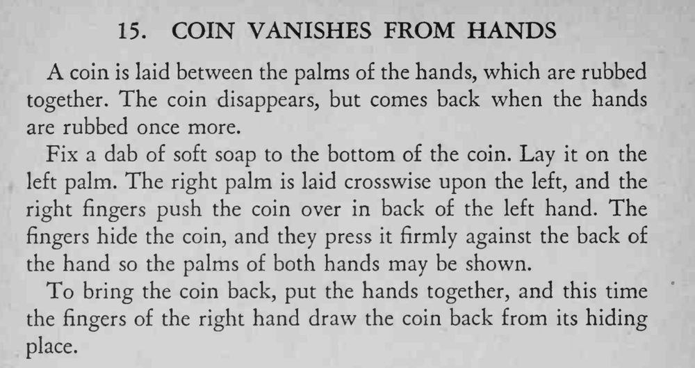

硬币夹在两掌之间搓几下就消失了，两掌摊开也能给人看，再搓一次硬币又回来了。
软肥皂要少抹，刚好粘住即可；推币时手掌朝里，别让观众看见。

A coin is laid between the palms of the hands, which are rubbed together. The coin disappears, but comes back when the hands are rubbed once more. Fix a dab of soft soap to the bottom of the coin. Lay it on the left palm. The right palm is laid crosswise upon the left, and the right fingers push the coin over in back of the left hand. The fingers hide the coin, and they press it firmly against the back of the hand so the palms of both hands may be shown. To bring the coin back, put the hands together, and this time the fingers of the right hand draw the coin back from its hiding place.